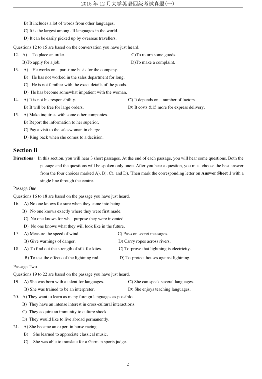
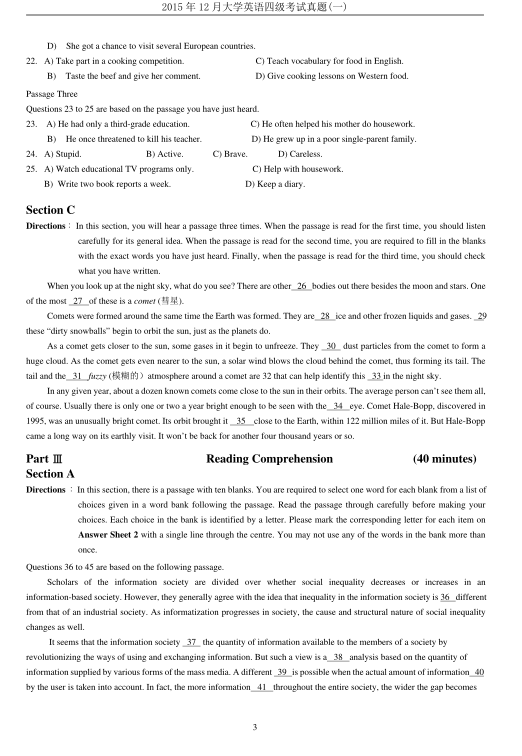
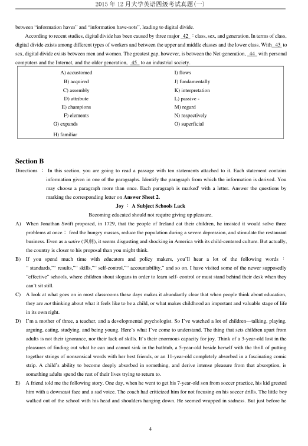
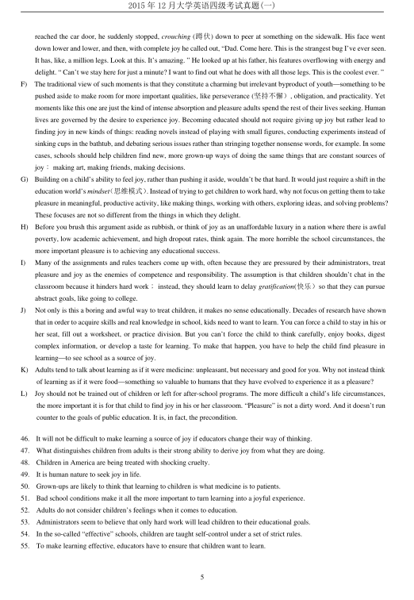
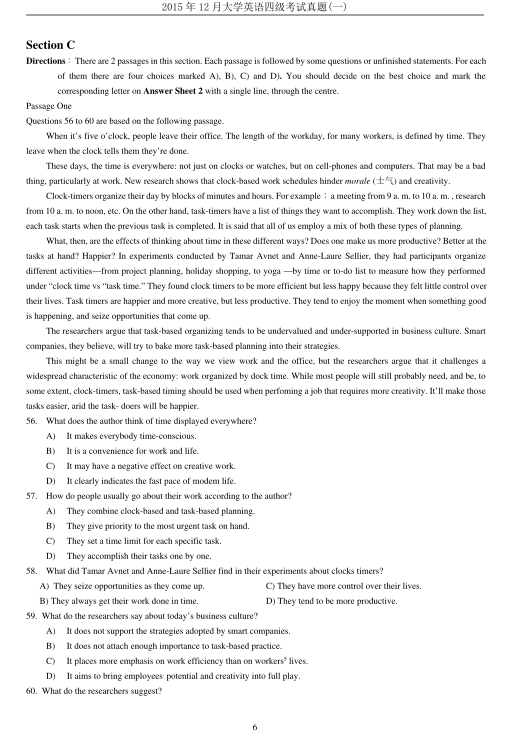
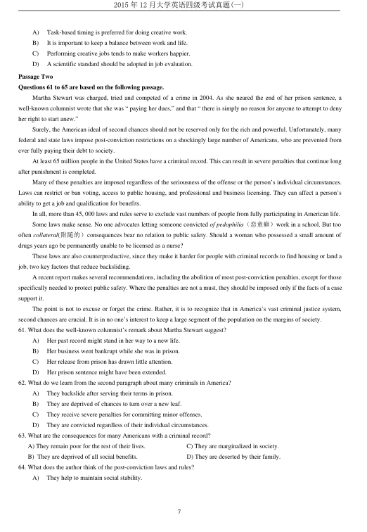
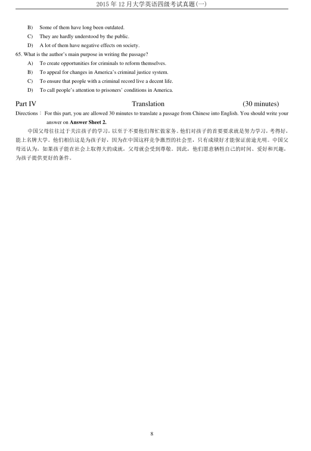

第 1 / 8 页

2015 年12 月大学英语四级考试真题(一)
1
2015 年12 月大学英语四级考试真题（第1 套)
Part I
Writing
(30 minutes)
Directions ：For this part, you are allowed 30 minutes to write an essay commenting on the saying “Listening is more
important than talking.’’ You can cite examples to illustrate the importance of paying attention to others1
opinions. You should write at least 120 words but no more than 180 words.
Part Ⅱ
Listening Comprehension
(30 minutes)
Section A
Directions ：In this section, you will hear 8 short conversations and 2 long conversations. At the end of each conversation, one
or more questions will be asked about what was said. Both the conversation and the questions will be spoken only
once. After each question there will be a -pause. During the pause, you must read the four choices marked A), B),
C) and D), and decide which is the best answer. Then mark the corresponding letter on Answer Sheet 1 with a
single line through the centre.
1.
A) They admire the courage of space explorers.
B)
They were going to watch a wonderful movie.
C)
They enjoyed the movie on space exploration.
D)
They like doing scientific exploration very much.
2.
A)
In a school library.
C) In the office of a travel agency.
B)
At a gift shop.
D) At
a graduation ceremony.
3.
A)
He used to work in the art gallery.
C) He is not interested in any part-time jobs.
C)
He does not have a good memory.
D) He declined a job offer from the art gallery.
4.
A)
He will be unable to attend the birthday party.
B) The woman should have informed him earlier.
C) He will go to the birthday party after the lecture.
D) Susan has been invited to give a lecture tomorrow.
5.
A) Set a deadline for the staff to meet.
C) Reward those having made good progress.
B) Assign more workers to the project.
D) Encourage the staff to work in small groups.
6.
A) Where she can leave her car.
C) How far away the parking lot is.
B) The rate for parking in Lot C.
D) The way to the visitors parking.
7.
A) He regrets missing the classes.
C) He plans to take the fitness classes.
B) He has benefited from exercise.
D) He is looking forward to a better life.
8.
A) How to select secretaries.
C) The responsibilities of secretaries.
B) How to raise work efficiency.
D) The secretaries in the man’s company.
Questions 9 to 11 are based on the conversation you have just heard.
9.
A) It is used by more people than English.
B) It is more difficult to learn than English.
C) It will be as commonly used as English.
D) It will eventually become a world language.
10. A)
Its popularity with the common people.
C) The influence of the British Empire.
B) The effect of the Industrial Revolution.
D) Itsloan words from many languages.
11. A) It has a growing number of newly coined words.
查看 / 复制本页文字
2015 年12 月大学英语四级考试真题(一) 1 2015 年12 月大学英语四级考试真题（第1 套) Part I Writing (30 minutes) Directions ：For this part, you are allowed 30 minutes to write an essay commenting on the saying “Listening is more important than talking.’’ You can cite examples to illustrate the importance of paying attention to others1 opinions. You should write at least 120 words but no more than 180 words. Part Ⅱ Listening Comprehension (30 minutes) Section A Directions ：In this section, you will hear 8 short conversations and 2 long conversations. At the end of each conversation, one or more questions will be asked about what was said. Both the conversation and the questions will be spoken only once. After each question there will be a -pause. During the pause, you must read the four choices marked A), B), C) and D), and decide which is the best answer. Then mark the corresponding letter on Answer Sheet 1 with a single line through the centre. 1. A) They admire the courage of space explorers. B) They were going to watch a wonderful movie. C) They enjoyed the movie on space exploration. D) They like doing scientific exploration very much. 2. A) In a school library. C) In the office of a travel agency. B) At a gift shop. D) At a graduation ceremony. 3. A) He used to work in the art gallery. C) He is not interested in any part-time jobs. C) He does not have a good memory. D) He declined a job offer from the art gallery. 4. A) He will be unable to attend the birthday party. B) The woman should have informed him earlier. C) He will go to the birthday party after the lecture. D) Susan has been invited to give a lecture tomorrow. 5. A) Set a deadline for the staff to meet. C) Reward those having made good progress. B) Assign more workers to the project. D) Encourage the staff to work in small groups. 6. A) Where she can leave her car. C) How far away the parking lot is. B) The rate for parking in Lot C. D) The way to the visitors parking. 7. A) He regrets missing the classes. C) He plans to take the fitness classes. B) He has benefited from exercise. D) He is looking forward to a better life. 8. A) How to select secretaries. C) The responsibilities of secretaries. B) How to raise work efficiency. D) The secretaries in the man’s company. Questions 9 to 11 are based on the conversation you have just heard. 9. A) It is used by more people than English. B) It is more difficult to learn than English. C) It will be as commonly used as English. D) It will eventually become a world language. 10. A) Its popularity with the common people. C) The influence of the British Empire. B) The effect of the Industrial Revolution. D) Itsloan words from many languages. 11. A) It has a growing number of newly coined words.
第 2 / 8 页

2015 年12 月大学英语四级考试真题(一)
2
B) It includes a lot of words from other languages.
C) It is the largest among all languages in the world.
D) It can be easily picked up by overseas travellers.
Questions 12 to 15 are based on the conversation you have just heard.
12. A)
To place an order.
C)To return some goods.
B)To apply for a job.
D)To make a complaint.
13.
A)
He works on a part-time basis for the company.
B) He has not worked in the sales department for long.
C) He is not familiar with the exact details of the goods.
D) He has become somewhat impatient with the woman.
14.
A) It is not his responsibility.
C) It depends on a number of factors.
B) It will be free for large orders.
D) It costs &15 more for express delivery.
15.
A) Make inquiries with some other companies.
B) Report the information to her superior.
C) Pay a visit to the saleswoman in charge.
D) Ring back when she comes to a decision.
Section B
Directions：In this section, you will hear 3 short passages. At the end of each passage, you will hear some questions. Both the
passage and the questions will be spoken only once. After you hear a question, you must choose the best answer
from the four choices marked A), B), C), and D). Then mark the corresponding letter on Answer Sheet 1 with a
single line through the centre.
Passage One
Questions 16 to 18 are based on the passage you have just heard.
16,
A) No one knows for sure when they came into being.
B) No one knows exactly where they were first made.
C) No one knows for what purpose they were invented.
D) No one knows what they will look like in the future.
17.
A) Measure the speed of wind.
C) Pass on secret messages.
B) Give warnings of danger.
D) Carry ropes across rivers.
18.
A) To find out the strength of silk for kites.
C) To prove that lightning is electricity.
B) To test the effects of the lightning rod.
D) To protect houses against lightning.
Passage Two
Questions 19 to 22 are based on the passage you have just heard.
19.
A) She was born with a talent for languages.
C) She can speak several languages.
B) She was trained to be an interpreter.
D) She enjoys teaching languages.
20. A) They want to learn as many foreign languages as possible.
B) They have an intense interest in cross-cultural interactions.
C) They acquire an immunity to culture shock.
D) They would like to live abroad permanently.
21.
A) She became an expert in horse racing.
B)
She learned to appreciate classical music.
C)
She was able to translate for a German sports judge.
查看 / 复制本页文字
2015 年12 月大学英语四级考试真题(一) 2 B) It includes a lot of words from other languages. C) It is the largest among all languages in the world. D) It can be easily picked up by overseas travellers. Questions 12 to 15 are based on the conversation you have just heard. 12. A) To place an order. C)To return some goods. B)To apply for a job. D)To make a complaint. 13. A) He works on a part-time basis for the company. B) He has not worked in the sales department for long. C) He is not familiar with the exact details of the goods. D) He has become somewhat impatient with the woman. 14. A) It is not his responsibility. C) It depends on a number of factors. B) It will be free for large orders. D) It costs &15 more for express delivery. 15. A) Make inquiries with some other companies. B) Report the information to her superior. C) Pay a visit to the saleswoman in charge. D) Ring back when she comes to a decision. Section B Directions：In this section, you will hear 3 short passages. At the end of each passage, you will hear some questions. Both the passage and the questions will be spoken only once. After you hear a question, you must choose the best answer from the four choices marked A), B), C), and D). Then mark the corresponding letter on Answer Sheet 1 with a single line through the centre. Passage One Questions 16 to 18 are based on the passage you have just heard. 16, A) No one knows for sure when they came into being. B) No one knows exactly where they were first made. C) No one knows for what purpose they were invented. D) No one knows what they will look like in the future. 17. A) Measure the speed of wind. C) Pass on secret messages. B) Give warnings of danger. D) Carry ropes across rivers. 18. A) To find out the strength of silk for kites. C) To prove that lightning is electricity. B) To test the effects of the lightning rod. D) To protect houses against lightning. Passage Two Questions 19 to 22 are based on the passage you have just heard. 19. A) She was born with a talent for languages. C) She can speak several languages. B) She was trained to be an interpreter. D) She enjoys teaching languages. 20. A) They want to learn as many foreign languages as possible. B) They have an intense interest in cross-cultural interactions. C) They acquire an immunity to culture shock. D) They would like to live abroad permanently. 21. A) She became an expert in horse racing. B) She learned to appreciate classical music. C) She was able to translate for a German sports judge.
第 3 / 8 页

2015 年12 月大学英语四级考试真题(一)
3
D)
She got a chance to visit several European countries.
22. A) Take part in a cooking competition.
C) Teach vocabulary for food in English.
B)
Taste the beef and give her comment.
D) Give cooking lessons on Western food.
Passage Three
Questions 23 to 25 are based on the passage you have just heard.
23.
A) He had only a third-grade education.
C) He often helped his mother do housework.
B)
He once threatened to kill his teacher.
D) He grew up in a poor single-parent family.
24. A) Stupid.
B) Active.
C) Brave.
D) Careless.
25. A) Watch educational TV programs only.
C) Help with housework.
B) Write two book reports a week.
D) Keep a diary.
Section C
Directions：In this section, you will hear a passage three times. When the passage is read for the first time, you should listen
carefully for its general idea. When the passage is read for the second time, you are required to fill in the blanks
with the exact words you have just heard. Finally, when the passage is read for the third time, you should check
what you have written.
When you look up at the night sky, what do you see? There are other 26 bodies out there besides the moon and stars. One
of the most 27 of these is a comet (彗星).
Comets were formed around the same time the Earth was formed. They are 28 ice and other frozen liquids and gases. 29
these “dirty snowballs” begin to orbit the sun, just as the planets do.
As a comet gets closer to the sun, some gases in it begin to unfreeze. They
30
dust particles from the comet to form a
huge cloud. As the comet gets even nearer to the sun, a solar wind blows the cloud behind the comet, thus forming its tail. The
tail and the 31 fuzzy (模糊的）atmosphere around a comet are 32 that can help identify this 33 in the night sky.
In any given year, about a dozen known comets come close to the sun in their orbits. The average person can’t see them all,
of course. Usually there is only one or two a year bright enough to be seen with the 34 eye. Comet Hale-Bopp, discovered in
1995, was an unusually bright comet. Its orbit brought it
35
close to the Earth, within 122 million miles of it. But Hale-Bopp
came a long way on its earthly visit. It won’t be back for another four thousand years or so.
Part Ⅲ
Reading Comprehension
(40 minutes)
Section A
Directions ：In this section, there is a passage with ten blanks. You are required to select one word for each blank from a list of
choices given in a word bank following the passage. Read the passage through carefully before making your
choices. Each choice in the bank is identified by a letter. Please mark the corresponding letter for each item on
Answer Sheet 2 with a single line through the centre. You may not use any of the words in the bank more than
once.
Questions 36 to 45 are based on the following passage.
Scholars of the information society are divided over whether social inequality decreases or increases in an
information-based society. However, they generally agree with the idea that inequality in the information society is 36 different
from that of an industrial society. As informatization progresses in society, the cause and structural nature of social inequality
changes as well.
It seems that the information society 37 the quantity of information available to the members of a society by
revolutionizing the ways of using and exchanging information. But such a view is a 38 analysis based on the quantity of
information supplied by various forms of the mass media. A different 39 is possible when the actual amount of information 40
by the user is taken into account. In fact, the more information 41 throughout the entire society, the wider the gap becomes
查看 / 复制本页文字
2015 年12 月大学英语四级考试真题(一) 3 D) She got a chance to visit several European countries. 22. A) Take part in a cooking competition. C) Teach vocabulary for food in English. B) Taste the beef and give her comment. D) Give cooking lessons on Western food. Passage Three Questions 23 to 25 are based on the passage you have just heard. 23. A) He had only a third-grade education. C) He often helped his mother do housework. B) He once threatened to kill his teacher. D) He grew up in a poor single-parent family. 24. A) Stupid. B) Active. C) Brave. D) Careless. 25. A) Watch educational TV programs only. C) Help with housework. B) Write two book reports a week. D) Keep a diary. Section C Directions：In this section, you will hear a passage three times. When the passage is read for the first time, you should listen carefully for its general idea. When the passage is read for the second time, you are required to fill in the blanks with the exact words you have just heard. Finally, when the passage is read for the third time, you should check what you have written. When you look up at the night sky, what do you see? There are other 26 bodies out there besides the moon and stars. One of the most 27 of these is a comet (彗星). Comets were formed around the same time the Earth was formed. They are 28 ice and other frozen liquids and gases. 29 these “dirty snowballs” begin to orbit the sun, just as the planets do. As a comet gets closer to the sun, some gases in it begin to unfreeze. They 30 dust particles from the comet to form a huge cloud. As the comet gets even nearer to the sun, a solar wind blows the cloud behind the comet, thus forming its tail. The tail and the 31 fuzzy (模糊的）atmosphere around a comet are 32 that can help identify this 33 in the night sky. In any given year, about a dozen known comets come close to the sun in their orbits. The average person can’t see them all, of course. Usually there is only one or two a year bright enough to be seen with the 34 eye. Comet Hale-Bopp, discovered in 1995, was an unusually bright comet. Its orbit brought it 35 close to the Earth, within 122 million miles of it. But Hale-Bopp came a long way on its earthly visit. It won’t be back for another four thousand years or so. Part Ⅲ Reading Comprehension (40 minutes) Section A Directions ：In this section, there is a passage with ten blanks. You are required to select one word for each blank from a list of choices given in a word bank following the passage. Read the passage through carefully before making your choices. Each choice in the bank is identified by a letter. Please mark the corresponding letter for each item on Answer Sheet 2 with a single line through the centre. You may not use any of the words in the bank more than once. Questions 36 to 45 are based on the following passage. Scholars of the information society are divided over whether social inequality decreases or increases in an information-based society. However, they generally agree with the idea that inequality in the information society is 36 different from that of an industrial society. As informatization progresses in society, the cause and structural nature of social inequality changes as well. It seems that the information society 37 the quantity of information available to the members of a society by revolutionizing the ways of using and exchanging information. But such a view is a 38 analysis based on the quantity of information supplied by various forms of the mass media. A different 39 is possible when the actual amount of information 40 by the user is taken into account. In fact, the more information 41 throughout the entire society, the wider the gap becomes
第 4 / 8 页

2015 年12 月大学英语四级考试真题(一)
4
between “information haves” and “information have-nots”, leading to digital divide.
According to recent studies, digital divide has been caused by three major 42 ：class, sex, and generation. In terms of class,
digital divide exists among different types of workers and between the upper and middle classes and the lower class. With 43 to
sex, digital divide exists between men and women. The greatest gap, however, is between the Net-generation, 44 with personal
computers and the Internet, and the older generation, 45 to an industrial society.
Section B
Directions ：In this section, you are going to read a passage with ten statements attached to it. Each statement contains
information given in one of the paragraphs. Identify the paragraph from which the information is derived. You
may choose a paragraph more than once. Each paragraph is marked' with a letter. Answer the questions by
marking the corresponding letter on Answer Sheet 2.
Joy ：A Subject Schools Lack
Becoming educated should not require giving up pleasure.
A)
When Jonathan Swift proposed, in 1729, that the people of Ireland eat their children, he insisted it would solve three
problems at once：feed the hungry masses, reduce the population during a severe depression, and stimulate the restaurant
business. Even as a satire (讽刺), it seems disgusting and shocking in America with its child-centered culture. But actually,
the country is closer to his proposal than you might think.
B)
If you spend much time with educators and policy makers, you’ll hear a lot of the following words ：
“ standards,”“ results,”“ skills,”“ self-control,”“ accountability,” and so on. I have visited some of the newer supposedly
“effective” schools, where children shout slogans in order to learn self- control or must stand behind their desk when they
can’t sit still.
C)
A look at what goes on in most classrooms these days makes it abundantly clear that when people think about education,
they are not thinking about what it feels like to be a child, or what makes childhood an important and valuable stage of life
in its own right.
D)
I’m a mother of three, a teacher, and a developmental psychologist. So I’ve watched a lot of children—talking, playing,
arguing, eating, studying, and being young. Here’s what I’ve come to understand. The thing that sets children apart from
adults is not their ignorance, nor their lack of skills. It’s their enormous capacity for joy. Think of a 3-year-old lost in the
pleasures of finding out what he can and cannot sink in the bathtub, a 5-year-old beside herself with the thrill of putting
together strings of nonsensical words with her best friends, or an 11-year-old completely absorbed in a fascinating comic
strip. A child’s ability to become deeply absorbed in something, and derive intense pleasure from that absorption, is
something adults spend the rest of their lives trying to return to.
E)
A friend told me the following story. One day, when he went to get his 7-year-old son from soccer practice, his kid greeted
him with a downcast face and a sad voice. The coach had criticized him for not focusing on his soccer drills. The little boy
walked out of the school with his head and shoulders hanging down. He seemed wrapped in sadness. But just before he
A) accustomed
I) flows
B) acquired
J) fundamentally
C) assembly
K) interpretation
D) attribute
L) passive -
E) champions
M) regard
F) elements
N) respectively
G) expands
H) familiar
O) superficial
查看 / 复制本页文字
2015 年12 月大学英语四级考试真题(一) 4 between “information haves” and “information have-nots”, leading to digital divide. According to recent studies, digital divide has been caused by three major 42 ：class, sex, and generation. In terms of class, digital divide exists among different types of workers and between the upper and middle classes and the lower class. With 43 to sex, digital divide exists between men and women. The greatest gap, however, is between the Net-generation, 44 with personal computers and the Internet, and the older generation, 45 to an industrial society. Section B Directions ：In this section, you are going to read a passage with ten statements attached to it. Each statement contains information given in one of the paragraphs. Identify the paragraph from which the information is derived. You may choose a paragraph more than once. Each paragraph is marked' with a letter. Answer the questions by marking the corresponding letter on Answer Sheet 2. Joy ：A Subject Schools Lack Becoming educated should not require giving up pleasure. A) When Jonathan Swift proposed, in 1729, that the people of Ireland eat their children, he insisted it would solve three problems at once：feed the hungry masses, reduce the population during a severe depression, and stimulate the restaurant business. Even as a satire (讽刺), it seems disgusting and shocking in America with its child-centered culture. But actually, the country is closer to his proposal than you might think. B) If you spend much time with educators and policy makers, you’ll hear a lot of the following words ： “ standards,”“ results,”“ skills,”“ self-control,”“ accountability,” and so on. I have visited some of the newer supposedly “effective” schools, where children shout slogans in order to learn self- control or must stand behind their desk when they can’t sit still. C) A look at what goes on in most classrooms these days makes it abundantly clear that when people think about education, they are not thinking about what it feels like to be a child, or what makes childhood an important and valuable stage of life in its own right. D) I’m a mother of three, a teacher, and a developmental psychologist. So I’ve watched a lot of children—talking, playing, arguing, eating, studying, and being young. Here’s what I’ve come to understand. The thing that sets children apart from adults is not their ignorance, nor their lack of skills. It’s their enormous capacity for joy. Think of a 3-year-old lost in the pleasures of finding out what he can and cannot sink in the bathtub, a 5-year-old beside herself with the thrill of putting together strings of nonsensical words with her best friends, or an 11-year-old completely absorbed in a fascinating comic strip. A child’s ability to become deeply absorbed in something, and derive intense pleasure from that absorption, is something adults spend the rest of their lives trying to return to. E) A friend told me the following story. One day, when he went to get his 7-year-old son from soccer practice, his kid greeted him with a downcast face and a sad voice. The coach had criticized him for not focusing on his soccer drills. The little boy walked out of the school with his head and shoulders hanging down. He seemed wrapped in sadness. But just before he A) accustomed I) flows B) acquired J) fundamentally C) assembly K) interpretation D) attribute L) passive - E) champions M) regard F) elements N) respectively G) expands H) familiar O) superficial
第 5 / 8 页

2015 年12 月大学英语四级考试真题(一)
5
reached the car door, he suddenly stopped, crouching (蹲伏) down to peer at something on the sidewalk. His face went
down lower and lower, and then, with complete joy he called out, “Dad. Come here. This is the strangest bug I’ve ever seen.
It has, like, a million legs. Look at this. It’s amazing. ” He looked up at his father, his features overflowing with energy and
delight. “ Can’t we stay here for just a minute? I want to find out what he does with all those legs. This is the coolest ever. ”
F)
The traditional view of such moments is that they constitute a charming but irrelevant byproduct of youth—something to be
pushed aside to make room for more important qualities, like perseverance (坚持不懈）, obligation, and practicality. Yet
moments like this one are just the kind of intense absorption and pleasure adults spend the rest of their lives seeking. Human
lives are governed by the desire to experience joy. Becoming educated should not require giving up joy but rather lead to
finding joy in new kinds of things: reading novels instead of playing with small figures, conducting experiments instead of
sinking cups in the bathtub, and debating serious issues rather than stringing together nonsense words, for example. In some
cases, schools should help children find new, more grown-up ways of doing the same things that are constant sources of
joy：making art, making friends, making decisions.
G)
Building on a child’s ability to feel joy, rather than pushing it aside, wouldn’t be that hard. It would just require a shift in the
education world’s mindset（思维模式）. Instead of trying to get children to work hard, why not focus on getting them to take
pleasure in meaningful, productive activity, like making things, working with others, exploring ideas, and solving problems?
These focuses are not so different from the things in which they delight.
H)
Before you brush this argument aside as rubbish, or think of joy as an unaffordable luxury in a nation where there is awful
poverty, low academic achievement, and high dropout rates, think again. The more horrible the school circumstances, the
more important pleasure is to achieving any educational success.
I)
Many of the assignments and rules teachers come up with, often because they are pressured by their administrators, treat
pleasure and joy as the enemies of competence and responsibility. The assumption is that children shouldn’t chat in the
classroom because it hinders hard work；instead, they should learn to delay gratification(快乐）so that they can pursue
abstract goals, like going to college.
J)
Not only is this a boring and awful way to treat children, it makes no sense educationally. Decades of research have shown
that in order to acquire skills and real knowledge in school, kids need to want to learn. You can force a child to stay in his or
her seat, fill out a worksheet, or practice division. But you can’t force the child to think carefully, enjoy books, digest
complex information, or develop a taste for learning. To make that happen, you have to help the child find pleasure in
learning—to see school as a source of joy.
K)
Adults tend to talk about learning as if it were medicine: unpleasant, but necessary and good for you. Why not instead think
of learning as if it were food—something so valuable to humans that they have evolved to experience it as a pleasure?
L)
Joy should not be trained out of children or left for after-school programs. The more difficult a child’s life circumstances,
the more important it is for that child to find joy in his or her classroom. “Pleasure” is not a dirty word. And it doesn’t run
counter to the goals of public education. It is, in fact, the precondition.
46.
It will not be difficult to make learning a source of joy if educators change their way of thinking.
47.
What distinguishes children from adults is their strong ability to derive joy from what they are doing.
48.
Children in America are being treated with shocking cruelty.
49.
It is human nature to seek joy in life.
50.
Grown-ups are likely to think that learning to children is what medicine is to patients.
51.
Bad school conditions make it all the more important to turn learning into a joyful experience.
52.
Adults do not consider children’s feelings when it comes to education.
53.
Administrators seem to believe that only hard work will lead children to their educational goals.
54.
In the so-called “effective” schools, children are taught self-control under a set of strict rules.
55.
To make learning effective, educators have to ensure that children want to learn.
查看 / 复制本页文字
2015 年12 月大学英语四级考试真题(一) 5 reached the car door, he suddenly stopped, crouching (蹲伏) down to peer at something on the sidewalk. His face went down lower and lower, and then, with complete joy he called out, “Dad. Come here. This is the strangest bug I’ve ever seen. It has, like, a million legs. Look at this. It’s amazing. ” He looked up at his father, his features overflowing with energy and delight. “ Can’t we stay here for just a minute? I want to find out what he does with all those legs. This is the coolest ever. ” F) The traditional view of such moments is that they constitute a charming but irrelevant byproduct of youth—something to be pushed aside to make room for more important qualities, like perseverance (坚持不懈）, obligation, and practicality. Yet moments like this one are just the kind of intense absorption and pleasure adults spend the rest of their lives seeking. Human lives are governed by the desire to experience joy. Becoming educated should not require giving up joy but rather lead to finding joy in new kinds of things: reading novels instead of playing with small figures, conducting experiments instead of sinking cups in the bathtub, and debating serious issues rather than stringing together nonsense words, for example. In some cases, schools should help children find new, more grown-up ways of doing the same things that are constant sources of joy：making art, making friends, making decisions. G) Building on a child’s ability to feel joy, rather than pushing it aside, wouldn’t be that hard. It would just require a shift in the education world’s mindset（思维模式）. Instead of trying to get children to work hard, why not focus on getting them to take pleasure in meaningful, productive activity, like making things, working with others, exploring ideas, and solving problems? These focuses are not so different from the things in which they delight. H) Before you brush this argument aside as rubbish, or think of joy as an unaffordable luxury in a nation where there is awful poverty, low academic achievement, and high dropout rates, think again. The more horrible the school circumstances, the more important pleasure is to achieving any educational success. I) Many of the assignments and rules teachers come up with, often because they are pressured by their administrators, treat pleasure and joy as the enemies of competence and responsibility. The assumption is that children shouldn’t chat in the classroom because it hinders hard work；instead, they should learn to delay gratification(快乐）so that they can pursue abstract goals, like going to college. J) Not only is this a boring and awful way to treat children, it makes no sense educationally. Decades of research have shown that in order to acquire skills and real knowledge in school, kids need to want to learn. You can force a child to stay in his or her seat, fill out a worksheet, or practice division. But you can’t force the child to think carefully, enjoy books, digest complex information, or develop a taste for learning. To make that happen, you have to help the child find pleasure in learning—to see school as a source of joy. K) Adults tend to talk about learning as if it were medicine: unpleasant, but necessary and good for you. Why not instead think of learning as if it were food—something so valuable to humans that they have evolved to experience it as a pleasure? L) Joy should not be trained out of children or left for after-school programs. The more difficult a child’s life circumstances, the more important it is for that child to find joy in his or her classroom. “Pleasure” is not a dirty word. And it doesn’t run counter to the goals of public education. It is, in fact, the precondition. 46. It will not be difficult to make learning a source of joy if educators change their way of thinking. 47. What distinguishes children from adults is their strong ability to derive joy from what they are doing. 48. Children in America are being treated with shocking cruelty. 49. It is human nature to seek joy in life. 50. Grown-ups are likely to think that learning to children is what medicine is to patients. 51. Bad school conditions make it all the more important to turn learning into a joyful experience. 52. Adults do not consider children’s feelings when it comes to education. 53. Administrators seem to believe that only hard work will lead children to their educational goals. 54. In the so-called “effective” schools, children are taught self-control under a set of strict rules. 55. To make learning effective, educators have to ensure that children want to learn.
第 6 / 8 页

2015 年12 月大学英语四级考试真题(一)
6
Section C
Directions：There are 2 passages in this section. Each passage is followed by some questions or unfinished statements. For each
of them there are four choices marked A), B), C) and D). You should decide on the best choice and mark the
corresponding letter on Answer Sheet 2 with a single line, through the centre.
Passage One
Questions 56 to 60 are based on the following passage.
When it’s five o’clock, people leave their office. The length of the workday, for many workers, is defined by time. They
leave when the clock tells them they’re done.
These days, the time is everywhere: not just on clocks or watches, but on cell-phones and computers. That may be a bad
thing, particularly at work. New research shows that clock-based work schedules hinder morale (士气) and creativity.
Clock-timers organize their day by blocks of minutes and hours. For example：a meeting from 9 a. m. to 10 a. m. , research
from 10 a. m. to noon, etc. On the other hand, task-timers have a list of things they want to accomplish. They work down the list,
each task starts when the previous task is completed. It is said that all of us employ a mix of both these types of planning.
What, then, are the effects of thinking about time in these different ways? Does one make us more productive? Better at the
tasks at hand? Happier? In experiments conducted by Tamar Avnet and Anne-Laure Sellier, they had participants organize
different activities—from project planning, holiday shopping, to yoga —by time or to-do list to measure how they performed
under “clock time vs “task time.” They found clock timers to be more efficient but less happy because they felt little control over
their lives. Task timers are happier and more creative, but less productive. They tend to enjoy the moment when something good
is happening, and seize opportunities that come up.
The researchers argue that task-based organizing tends to be undervalued and under-supported in business culture. Smart
companies, they believe, will try to bake more task-based planning into their strategies.
This might be a small change to the way we view work and the office, but the researchers argue that it challenges a
widespread characteristic of the economy: work organized by dock time. While most people will still probably need, and be, to
some extent, clock-timers, task-based timing should be used when perfoming a job that requires more creativity. It’ll make those
tasks easier, arid the task- doers will be happier.
56.
What does the author think of time displayed everywhere?
A)
It makes everybody time-conscious.
B)
It is a convenience for work and life.
C)
It may have a negative effect on creative work.
D)
It clearly indicates the fast pace of modem life.
57.
How do people usually go about their work according to the author?
A)
They combine clock-based and task-based planning.
B)
They give priority to the most urgent task on hand.
C)
They set a time limit for each specific task.
D)
They accomplish their tasks one by one.
58.
What did Tamar Avnet and Anne-Laure Sellier find in their experiments about clocks timers?
A) They seize opportunities as they come up.
C) They have more control over their lives.
B) They always get their work done in time.
D) They tend to be more productive.
59. What do the researchers say about today’s business culture?
A)
It does not support the strategies adopted by smart companies.
B)
It does not attach enough importance to task-based practice.
C)
It places more emphasis on work efficiency than on workers5 lives.
D)
It aims to bring employees, potential and creativity into full play.
60. What do the researchers suggest?
查看 / 复制本页文字
2015 年12 月大学英语四级考试真题(一) 6 Section C Directions：There are 2 passages in this section. Each passage is followed by some questions or unfinished statements. For each of them there are four choices marked A), B), C) and D). You should decide on the best choice and mark the corresponding letter on Answer Sheet 2 with a single line, through the centre. Passage One Questions 56 to 60 are based on the following passage. When it’s five o’clock, people leave their office. The length of the workday, for many workers, is defined by time. They leave when the clock tells them they’re done. These days, the time is everywhere: not just on clocks or watches, but on cell-phones and computers. That may be a bad thing, particularly at work. New research shows that clock-based work schedules hinder morale (士气) and creativity. Clock-timers organize their day by blocks of minutes and hours. For example：a meeting from 9 a. m. to 10 a. m. , research from 10 a. m. to noon, etc. On the other hand, task-timers have a list of things they want to accomplish. They work down the list, each task starts when the previous task is completed. It is said that all of us employ a mix of both these types of planning. What, then, are the effects of thinking about time in these different ways? Does one make us more productive? Better at the tasks at hand? Happier? In experiments conducted by Tamar Avnet and Anne-Laure Sellier, they had participants organize different activities—from project planning, holiday shopping, to yoga —by time or to-do list to measure how they performed under “clock time vs “task time.” They found clock timers to be more efficient but less happy because they felt little control over their lives. Task timers are happier and more creative, but less productive. They tend to enjoy the moment when something good is happening, and seize opportunities that come up. The researchers argue that task-based organizing tends to be undervalued and under-supported in business culture. Smart companies, they believe, will try to bake more task-based planning into their strategies. This might be a small change to the way we view work and the office, but the researchers argue that it challenges a widespread characteristic of the economy: work organized by dock time. While most people will still probably need, and be, to some extent, clock-timers, task-based timing should be used when perfoming a job that requires more creativity. It’ll make those tasks easier, arid the task- doers will be happier. 56. What does the author think of time displayed everywhere? A) It makes everybody time-conscious. B) It is a convenience for work and life. C) It may have a negative effect on creative work. D) It clearly indicates the fast pace of modem life. 57. How do people usually go about their work according to the author? A) They combine clock-based and task-based planning. B) They give priority to the most urgent task on hand. C) They set a time limit for each specific task. D) They accomplish their tasks one by one. 58. What did Tamar Avnet and Anne-Laure Sellier find in their experiments about clocks timers? A) They seize opportunities as they come up. C) They have more control over their lives. B) They always get their work done in time. D) They tend to be more productive. 59. What do the researchers say about today’s business culture? A) It does not support the strategies adopted by smart companies. B) It does not attach enough importance to task-based practice. C) It places more emphasis on work efficiency than on workers5 lives. D) It aims to bring employees, potential and creativity into full play. 60. What do the researchers suggest?
第 7 / 8 页

2015 年12 月大学英语四级考试真题(一)
7
A)
Task-based timing is preferred for doing creative work.
B)
It is important to keep a balance between work and life.
C)
Performing creative jobs tends to make workers happier.
D)
A scientific standard should be adopted in job evaluation.
Passage Two
Questions 61 to 65 are based on the following passage.
Martha Stewart was charged, tried and competed of a crime in 2004. As she neared the end of her prison sentence, a
well-known columnist wrote that she was “ paying her dues,” and that “ there is simply no reason for anyone to attempt to deny
her right to start anew.”
Surely, the American ideal of second chances should not be reserved only for the rich and powerful. Unfortunately, many
federal and state laws impose post-conviction restrictions on a shockingly large number of Americans, who are prevented from
ever fully paying their debt to society.
At least 65 million people in the United States have a criminal record. This can result in severe penalties that continue long
after punishment is completed.
Many of these penalties are imposed regardless of the seriousness of the offense or the person’s individual circumstances.
Laws can restrict or ban voting, access to public housing, and professional and business licensing. They can affect a person’s
ability to get a job and qualification for benefits.
In all, more than 45, 000 laws and rules serve to exclude vast numbers of people from fully participating in American life.
Some laws make sense. No one advocates letting someone convicted of pedophilia（恋童癖）work in a school. But too
often collateral(附随的）consequences bear no relation to public safety. Should a woman who possessed a small amount of
drugs years ago be permanently unable to be licensed as a nurse?
These laws are also counterproductive, since they make it harder for people with criminal records to find housing or land a
job, two key factors that reduce backsliding.
A recent report makes several recommendations, including the abolition of most post-conviction penalties, except for those
specifically needed to protect public safety. Where the penalties are not a must, they should be imposed only if the facts of a case
support it.
The point is not to excuse or forget the crime. Rather, it is to recognize that in America’s vast criminal justice system,
second chances are crucial. It is in no one’s interest to keep a large segment of the population on the margins of society.
61. What does the well-known columnist’s remark about Martha Stewart suggest?
A)
Her past record might stand in her way to a new life.
B)
Her business went bankrupt while she was in prison.
C)
Her release from prison has drawn little attention.
D)
Her prison sentence might have been extended.
62. What do we learn from the second paragraph about many criminals in America?
A)
They backslide after serving their terms in prison.
B)
They are deprived of chances to turn over a new leaf.
C)
They receive severe penalties for committing minor offenses.
D)
They are convicted regardless of their individual circumstances.
63. What are the consequences for many Americans with a criminal record?
A) They remain poor for the rest of their lives.
C) They are marginalized in society.
B) They are deprived of all social benefits.
D) They are deserted by their family.
64. What does the author think of the post-conviction laws and rules?
A)
They help to maintain social stability.
查看 / 复制本页文字
2015 年12 月大学英语四级考试真题(一) 7 A) Task-based timing is preferred for doing creative work. B) It is important to keep a balance between work and life. C) Performing creative jobs tends to make workers happier. D) A scientific standard should be adopted in job evaluation. Passage Two Questions 61 to 65 are based on the following passage. Martha Stewart was charged, tried and competed of a crime in 2004. As she neared the end of her prison sentence, a well-known columnist wrote that she was “ paying her dues,” and that “ there is simply no reason for anyone to attempt to deny her right to start anew.” Surely, the American ideal of second chances should not be reserved only for the rich and powerful. Unfortunately, many federal and state laws impose post-conviction restrictions on a shockingly large number of Americans, who are prevented from ever fully paying their debt to society. At least 65 million people in the United States have a criminal record. This can result in severe penalties that continue long after punishment is completed. Many of these penalties are imposed regardless of the seriousness of the offense or the person’s individual circumstances. Laws can restrict or ban voting, access to public housing, and professional and business licensing. They can affect a person’s ability to get a job and qualification for benefits. In all, more than 45, 000 laws and rules serve to exclude vast numbers of people from fully participating in American life. Some laws make sense. No one advocates letting someone convicted of pedophilia（恋童癖）work in a school. But too often collateral(附随的）consequences bear no relation to public safety. Should a woman who possessed a small amount of drugs years ago be permanently unable to be licensed as a nurse? These laws are also counterproductive, since they make it harder for people with criminal records to find housing or land a job, two key factors that reduce backsliding. A recent report makes several recommendations, including the abolition of most post-conviction penalties, except for those specifically needed to protect public safety. Where the penalties are not a must, they should be imposed only if the facts of a case support it. The point is not to excuse or forget the crime. Rather, it is to recognize that in America’s vast criminal justice system, second chances are crucial. It is in no one’s interest to keep a large segment of the population on the margins of society. 61. What does the well-known columnist’s remark about Martha Stewart suggest? A) Her past record might stand in her way to a new life. B) Her business went bankrupt while she was in prison. C) Her release from prison has drawn little attention. D) Her prison sentence might have been extended. 62. What do we learn from the second paragraph about many criminals in America? A) They backslide after serving their terms in prison. B) They are deprived of chances to turn over a new leaf. C) They receive severe penalties for committing minor offenses. D) They are convicted regardless of their individual circumstances. 63. What are the consequences for many Americans with a criminal record? A) They remain poor for the rest of their lives. C) They are marginalized in society. B) They are deprived of all social benefits. D) They are deserted by their family. 64. What does the author think of the post-conviction laws and rules? A) They help to maintain social stability.
第 8 / 8 页

2015 年12 月大学英语四级考试真题(一)
8
B)
Some of them have long been outdated.
C)
They are hardly understood by the public.
D)
A lot of them have negative effects on society.
65. What is the author’s main purpose in writing the passage?
A)
To create opportunities for criminals to reform themselves.
B)
To appeal for changes in America’s criminal justice system.
C)
To ensure that people with a criminal record live a decent life.
D)
To call people’s attention to prisoners’ conditions in America.
Part IV
Translation
(30 minutes)
Directions：For this part, you are allowed 30 minutes to translate a passage from Chinese into English. You should write your
answer on Answer Sheet 2.
中国父母往往过于关注孩子的学习，以至于不要他们帮忙做家务。他们对孩子的首要要求就是努力学习，考得好，
能上名牌大学。他们相信这是为孩子好，因为在中国这样竞争激烈的社会里，只有成绩好才能保证前途光明。中国父
母还认为，如果孩子能在社会上取得大的成就，父母就会受到尊敬。因此，他们愿意牺牲自己的时间、爱好和兴趣，
为孩子提供更好的条件。
查看 / 复制本页文字
2015 年12 月大学英语四级考试真题(一) 8 B) Some of them have long been outdated. C) They are hardly understood by the public. D) A lot of them have negative effects on society. 65. What is the author’s main purpose in writing the passage? A) To create opportunities for criminals to reform themselves. B) To appeal for changes in America’s criminal justice system. C) To ensure that people with a criminal record live a decent life. D) To call people’s attention to prisoners’ conditions in America. Part IV Translation (30 minutes) Directions：For this part, you are allowed 30 minutes to translate a passage from Chinese into English. You should write your answer on Answer Sheet 2. 中国父母往往过于关注孩子的学习，以至于不要他们帮忙做家务。他们对孩子的首要要求就是努力学习，考得好， 能上名牌大学。他们相信这是为孩子好，因为在中国这样竞争激烈的社会里，只有成绩好才能保证前途光明。中国父 母还认为，如果孩子能在社会上取得大的成就，父母就会受到尊敬。因此，他们愿意牺牲自己的时间、爱好和兴趣， 为孩子提供更好的条件。